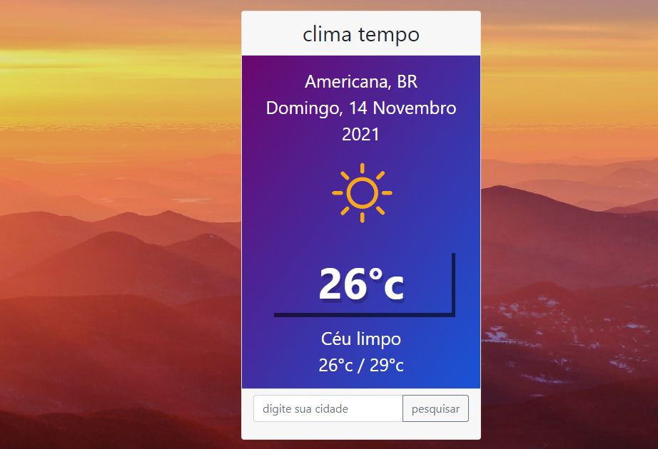

projetos

Site Arquitetura
site criado para a aprensentação de projetos e desenvolvimentos de arquitetura
ver projetos

Site Tempo
projeto criado para temperatura feito com JSON , Jquerry e API do wheater com geocalização
ver projetos
Linguagens
PHP
gosto muito de utilizar PHP em minhas aplicações pela facilidade em criar CROUD em banco de dados MySQL
Javascript
acredito que todo site precisa de javascript, utilizo muito em momentos que preciso usar API com JSON

C#
das linguagens POO é a minha favorita gosto muito pela forma simples e performatica para fazer sistemas desktop
Hobbies
Alem de programação uma coisa que descobri recentemente foi o gosto por livros principalmente biografias , sou um apaixonado por boas historias desde o primeiro que foi sobre Elon Musk e sua incrivel historia de resiliencia e sabedoria na criação da spaceX e TESLA, livros como de Pep Guardiola onde despertou cada vez mais a minha paixão por futebol e competitividade, sem esquecer do meu favorito "A marca da vitoria" uma autobiografia de Phil knight , contando cada detalhe de superação ,coragem e resiliencia ao fundar a NIKE, gosto muito tambem da biografia de Steve Jobs um visionario , genial e maluco que me fez apaixonar ainda mais por tecnologias e seus avanços ao longo dos anos